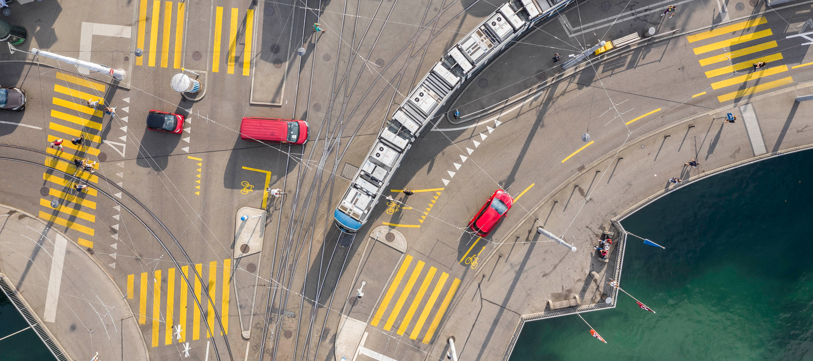
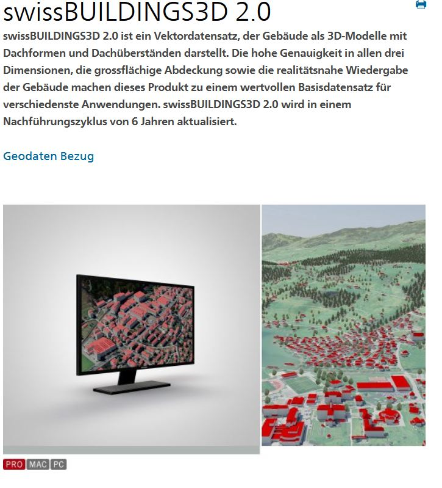

Mit dem Plugin QGIS2threejs (https://qgis2threejs.readthedocs.io/en/docs/) kann man 3D-Karten in QGIS darstellen. Diese kann man anschliessend so exportieren, dass man diese auf einer Website publizieren kann (hier als Beispiel auf GitHub Pages). Auch kann man zusätzlich Info-Boxen (inklusive Animation) hinzufügen. Bilder können auch in die Infoboxen plaziert werden, bei Videos müsste man direkt auf den Code der Website zugreifen. Die nächste Infobox dient als Beispiel.

Die Tempo-30-Zonen in Quartieren und die Gestaltung der Kantonsstrasse inkl. Geschwindigkeitsreduktion erhalten weiterhin grosse Zustimmung.
Der Richtplaneintrag Verkehrsberuhigung wurde von Eingang Städtli (West) bis zum Ende der Kernzone im Osten auf Höhe ehemaliges Rest. Schwyzerhof verlängert.
Im Massnahmenblatt V6.1 - T-30-Zonen in Quartieren - wurde die Prüfung eines Lastwagenfahrverbots auf der Schwärzistrasse im Rahmen des Tempo-30-Gutachtens
aufgenommen. Ein Lastwagenfahrverbot hat Einfluss auf die Strassenbreite und somit auf allfällige Gestaltungsmassnahmen entlang der Schwärzistrasse. Das Massnahmenblatt V7 - Öffentlicher Verkehr - wurde um den ½-Stunden-Takt des Busses bis ins Arvenbühl und auch nach 21 Uhr ergänzt. Zudem wurde aufgeführt, dass Shuttlebusse und/oder -boote auch privat betrieben werden können.Die bessere Beschilderung der Fusswege im Städtli und an der Seepromenade wurde im Massnahmenblatt V2 - Optimierung Fusswegenetz - aufgenommen. Die Fokussierung des Themenweges auf das Thema Mikroklima im Massnahmenblatt
V4 - Besucherlenkung - wurde gelockert. Die Prüfung einer Veloverbindung abseits der Hauptstrasse im Rahmen des Gestaltungs-
und Nutzungskonzept Seepromenade und Marktplatz wurde im Massnahmenblatt V3 - Optimierung Velowegenetz - aufgenommen.
Die Anliegen betreffend Strassenführung, Kurz- oder Langzeitparkplätzen in der Nähe des Städtli oder im Städtli und deren Bewirtschaftung, Verkehrsmessungen,
Gestaltung der Verbindung Städtli – Seepromenade, Lage der Bushaltestellen wurden als Pendenz für das als Richtplanmassnahme vorgesehene Verkehrs- und
Parkierungskonzept im Massnahmenblatt V1.1 aufgenommen. Einige Inputs können in einer späteren Planungsphase oder losgelöst von der Ortsplanungsrevisio
geprüft werden.
Auch können Namen (von Punkten, Linien, wie auch Polygonen) als Label dargestellt werden. Die Namen sind in diesem Beispiel jedem Punkt zugewiesen.
Wie auch Bilder. Diese können in der Karte dargestellt werden und richten sich immer nach dem/der Beobachter*in.
Auch können verschiedene Gebiete hervorgehoben werden. Hier wird das durch eine Art "Wand" gemacht, andere Optionen bestehen auch.
Es können auch die 3D-Daten von allen Häusern der Schweiz dargestellt werden. In dieser Animation sind die swissbuildings3D 3.0 dargestellt. Diese sind aber noch nicht flächendeckend in der Schweiz verfügbar

Und für den speziellen Touch können auch 3D Modelle (.dae, .glb) dargestellt werden. Mit dem Programm "Blender" können auch andere Formate (wie .obj) schnell konvertiert werden. // Es können auch Häuser-Modelle (in Farbe) hochgeladen werden, sofern sie im richtigen Format vorliegen. Die 3D-Modelle sind aber statisch. Nach dieser Infobox kann man sich mithilfe von Maus (oder Pfeiltasten) frei im Raum bewegen. Auf Mobilgeräten (wie IPhone usw.) kann die Website auch aufgerufen werden. Da sind die Infoboxen jedoch relativ gross.